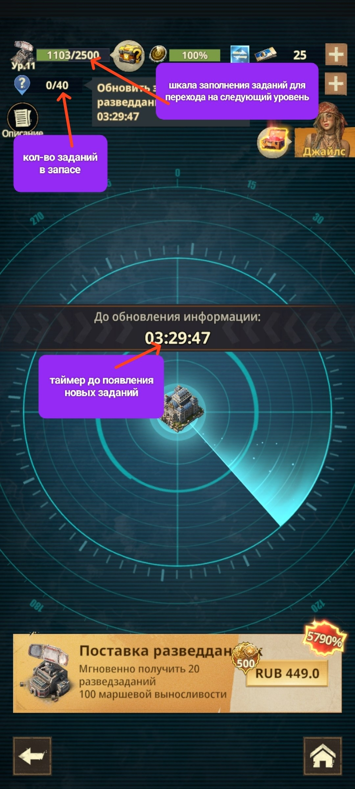

📡 Радар
📡 РАДАР Радар - это экран с заданиями, которые обновляются примерно раз в 4–5 часов. 🌅 Утром здесь выполняют задания на уничтожение Наблюдателя и зомби, сбор ресурсов или алмазов с плиток, помощь соклановцам и другие активности. ❤️ За выполнение каждого задания расходуется разное количество Выносливости. ⭐ Уровни Радара Радар имеет уровни. Они повышаются по мере заполнения шкалы выполненных заданий самого Радара. ⚔️ Радар и VS Игроки Альянсов, участвующие в событии VS, со временем привыкают копить задания Радара по воскресеньям, вторникам и четвергам, чтобы выполнить их в нужный день и получить очки события.

📡 Задания в запасе, шкала уровня Радара и таймер обновления